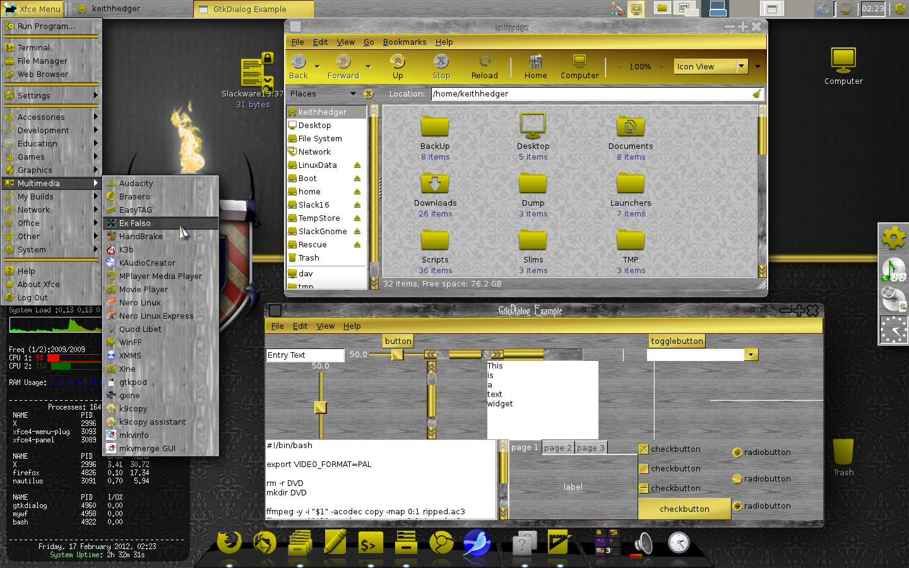
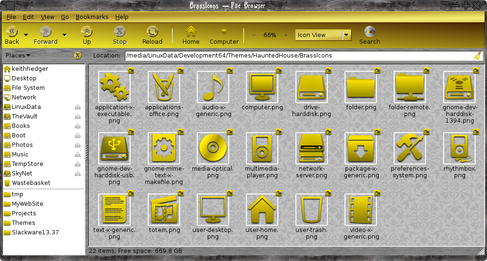
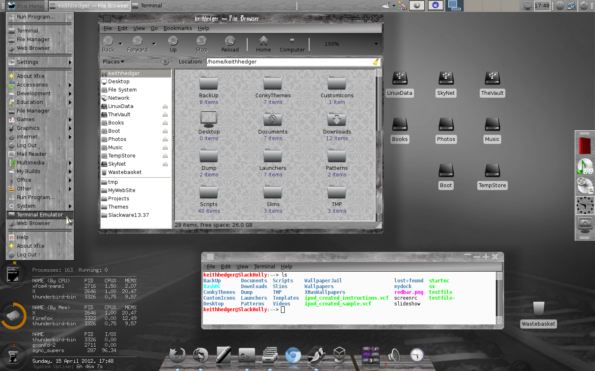
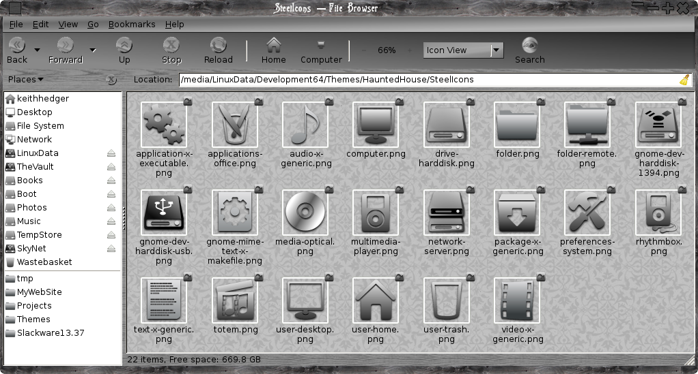
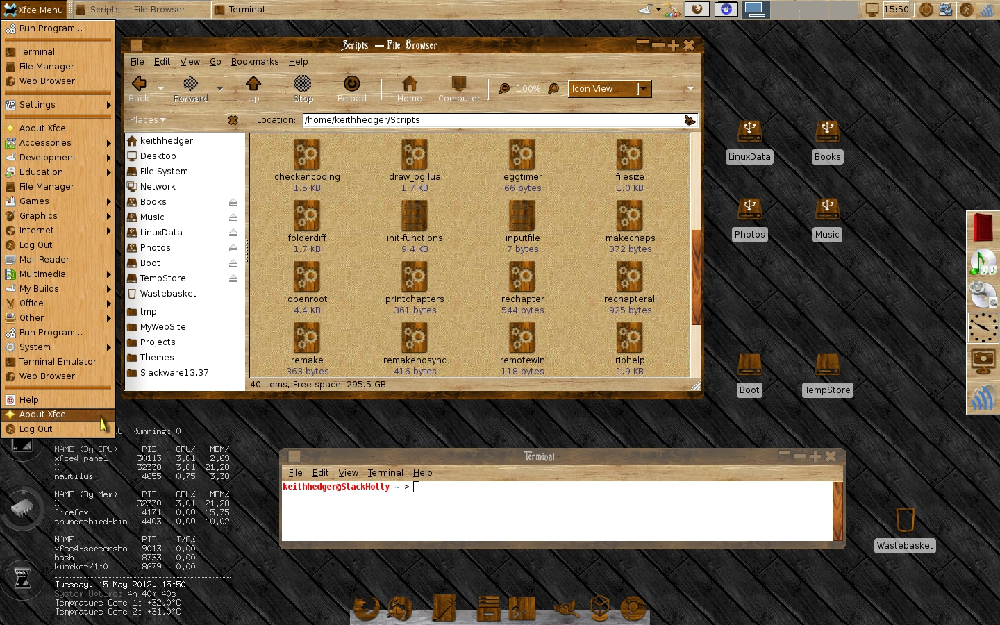
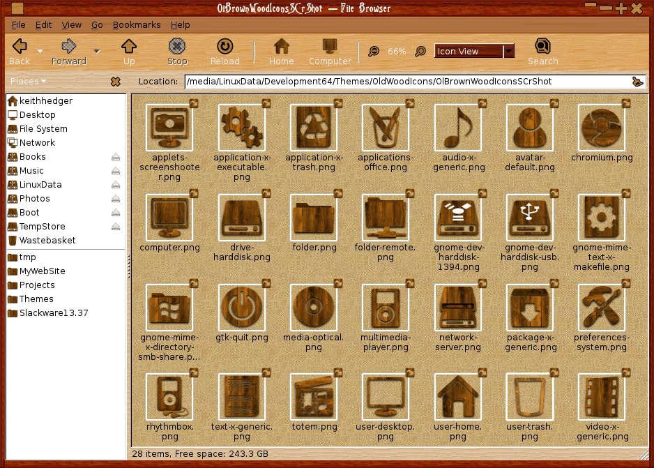
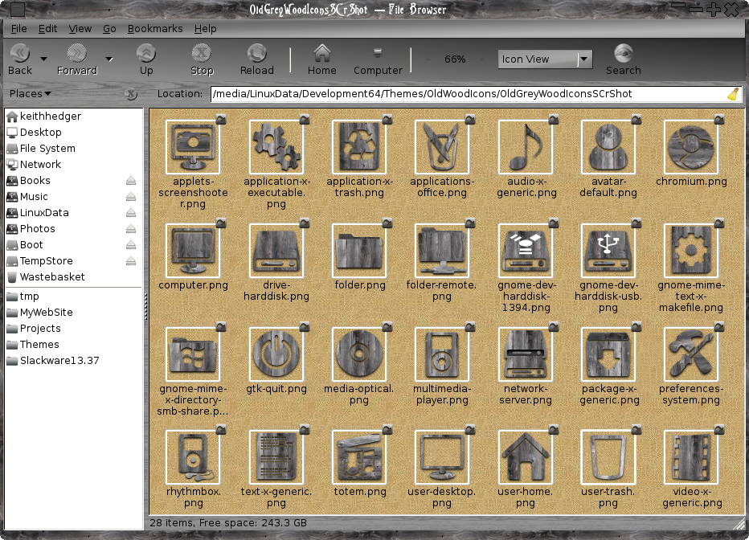

Old Wood Themes
Quick links:
Old Wood And Brass Theme
Old Wood And Brass Icons
Old Wood And Steel Theme
Old Wood And Steel Icons
Old Brown Wood Theme
Old Brown Wood Icons
Old Grey Wood Icons
Old Wood And Brass Theme

The icons used are based off of nouveGnomeGray available
HERE
They have been tweaked and renamed to nouveGnomeBrass

Old Wood And Steel Theme
This is a a metacity/Xfwm4 gtk2 theme with an old wood and steel flavour, I would suggest
THIS
wallpaper but made greyscale.

The icons used are based off of nouveGnomeGray available
HERE
They have been tweaked and renamed to nouveGnomeSteel

Old Brown Wood Theme
This is a Xfwm4 gtk2 theme with an old brown wood flavour
, use the old brown/grey wood icons below.

Old Brown Wood Icons
based off of nouveGnomeGray available
HERE
.

Old Grey Wood Icons
based off of nouveGnomeGray available
HERE
I would recommend a light background.

Themes
Back To Linux
Home
{kind=link}
{kind=link}
{kind=link}
{kind=link}
{kind=link}
{kind=link}
{kind=link}